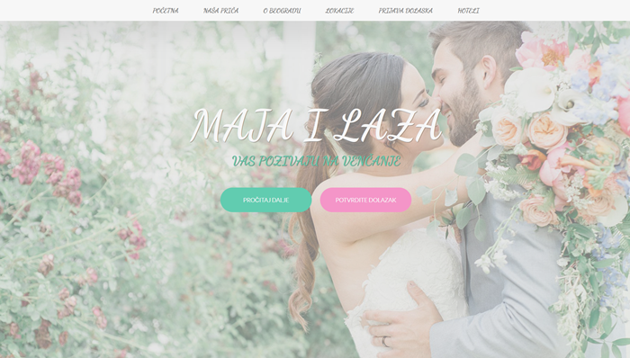
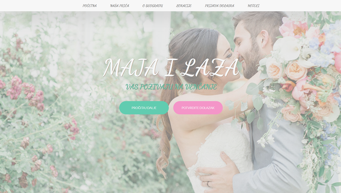
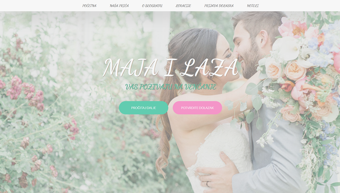
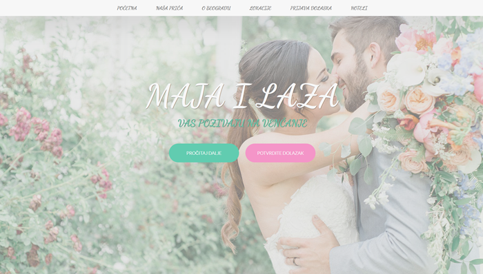

Web Design, React, Angular & PHP projects
 


 

Working as a React developer, I've been a member of multiple teams involved in building
complex IFA
(Independent Financial Adviser) application for buying insurance for a UK based banking client
- Built, debugged and refactored responsive, reusable SPA components with React, TypeScript, JavaScript,
CSS3 and Storybook, following S.O.L.I.D. and DRY principles
- Enhanced code quality through refactoring, unit testing (Jest and React Testing Library)
and accessibility
compliance, prioritizing clean, scalable, maintainable, testable and well documented code
- Collaborated daily with a distributed, Agile/Scrum teams across different time zones, participating in
code reviews, sprint planning and iterative delivery
- Advocated for code quality and accessibility best practices during development and review sessions
- Translated business requirements into technical implementations, escalating blockers for rapid
resolution
Engaged with Product Management, Scrum Masters, Business Analysts, UI/UX
Designers, Developers, DevOps and Quality Engineers for optimal outcomes
Tech stack: React, TypeScript, JavaScript, Redux Toolkit, Storybook, Jest, React Testing
Library,
Jenkins, Kibana, ES Lint, Jira, Git, GitHub, pnpm
Worked on a localized and full responsive back-office betting platform web application
- Built, debugged and refactored responsive, reusable SPA components and dynamic UIs with Angular,
TypeScript, JavaScript, Angular Reactive Forms, Angular Material, PrimeNG, CSS3 and SCSS
- Mentored a junior developer on Angular fundamentals and CSS best practices, improving his onboarding
and
productivity
- Ensuring cross-browser compatibility and responsiveness across devices
- Integrated REST APIs for real-time data fetching and state management
- Swagger model documentation for API endpoints
- Implemented Transloco i18n for multi-language support
Tech stack: Angular, TypeScript, JavaScript, REST APIs, JSON, PrimeNG, Angular Material, HTML5, CSS3,
SASS,
Transloco i18n, Redmine, ES Lint, Git, Bitbucket, npm
After I completed a comprehensive Web Design and PHP courses, I’ve delved into the
exciting realms of Web Development. Also, during this period, I mentored a colleague on web development
fundamentals, actively documenting and sharing knowledge of HTML5, PHP, MVC architecture, advanced CSS3,
Flexbox, Grid, SEO and SASS techniques, demonstrating patience and a ability to break down complex topics.
-
HTML5: My markup adheres to modern standards, ensuring semantic and accessible content
-
CSS Grid and Flexbox: I wield these layout techniques to create flexible, full responsive and pixel-perfect
designs
-
SASS: My stylesheets are organized and maintainable, thanks to SASS’s powerful features (nesting, mixins,
variables, extends)
-
SVG: I’ve harnessed SVG sprites for efficient icon management
-
BEM Methodology: When styling, I adhere to BEM - a structured approach that promotes
consistency and scalability
-
DRY Principle: I’m committed to minimizing redundancy by creating reusable components
and functions
-
Intersection Observer: I’ve used this API to trigger actions based on element visibility
-
SEO Mastery: Guided by experts, I learned the intricacies of SEO - how to optimize content, improve rankings and
drive organic traffic
-
Software Development Life Cycle: I’ve navigated the entire development process, from requirements
gathering to deployment, ensuring efficient and well-organized projects
-
Object-Oriented Programming: My codebase reflects the principles of OOP, emphasizing modularity,
encapsulation and reusability
-
PHP with phpMyAdmin and MySQL Database: I’ve built dynamic CRUD applications, leveraging PHP’s versatility
-
MVC Architecture: I organize code into models, views and controllers for maintainable projects
My work transcends dance - it’s about creating cohesive experiences, solving logistical challenges and uniting
people toward shared goals. These skills directly translate to driving team success in collaborative
professional settings. Transforming passion for movement into structured leadership and cross-functional
expertise.
Key Qualities & Achievements:
Operational Excellence
- Founded and scaled a dance school from concept to a functioning business, managing all aspects from budgeting
and marketing to curriculum development and event execution
- Cultivated collaborative environments emphasizing teamwork, cultural sensitivity and creative problem-solving
Instructional Leadership and Education
- Developed and delivered curriculum development for over 10 dance styles for diverse
student cohorts, honing the ability to explain complex concepts to learners of different skill levels
Event Production & Project Management
- Orchestrated 500+ international and local Naturally Dance events, managing end-to-end logistics, vendor coordination and audience
engagement
- Spearheaded Beogradska Disko Žurka - Belgrade
Disco Fever (1000+ attendees), creating inclusive experiences bridging cultural and generational divides
Marketing, PR & Community Engagement
- Built and nurtured a vibrant community from the ground up. Grew engagement through active participation on
social media (Facebook, Instagram, Messenger), responding to questions and creating a welcoming environment
- Engineered data-driven promotional campaigns (social media, guerilla tactics) increasing event attendance
- Secured media coverage and partnerships, enhancing brand visibility and community reach
Adaptability: Thrives in dynamic, high-pressure environments
Execution Focus: Combines creativity with operational discipline to deliver measurable outcomes
People-Centric Approach: Proven ability to engage diverse audiences and build inclusive communities
Entrepreneurial Mindset: Founder experience demonstrates initiative, risk management and ownership
I bring a rare blend of hands-on problem-solving (9+ years in the hotel tech industry),
large-scale project orchestration (500+ local & international events) and modern technical execution (4+ years in
frontend development). I thrive where precision meets people. Solve problems, lead projects and communicate
clearly - honed across tech, events and hotel operations. Certifications that I gained you can see here. I’m eager
to apply this versatility to your team. This
cuts through noise and positions me as a reliable executor, not just a developer.
Industry-Agnostic Impact
1. Problem-solving → Fixing inefficiencies
2. Event management → Hitting deadlines
3. Client communication → Driving retention
Skilled and experienced Developer Advantage
My non-traditional path proves resourcefulness and resilience - more valuable than rote credentials, always ready
to apply my knowledge and skills for continuous improvement. Working in
a large corporation I have been exposed to
clients with various backgrounds and nationalities. This experience allowed me to strengthen my pro-activity and
assertive approach and successfully apply them to all project development stages - from idealization, planning,
execution, monitoring and control to closure.
✔Spoken and written English knowledge
✔Well designed, testable and scalable code
✔Developing responsive and mobile-friendly websites
✔Excellent communication, collaboration and soft skills
✔Positive, responsible, detail and service-oriented personality
✔Experience with React, TypeScript, JavaScript, Redux Toolkit, React Hook Form, Jest, React Testing Library,
Angular,
RESTful API, Material UI, Angular Material, Prime NG, Transloco i18n, JSX, HTML5, CSS3,CSS Flexbox, CSS Grid,
SASS, SVG (single & sprite), SEO, PHP, MySQL, Git, npm and pnpm
✔Experience with ESLint
✔Experience in code reviewing
✔Experience with Agile and Scrum
✔Experience in all phases of SDLC
✔Experience in mentoring teammates
✔Learning new skills and technologies
✔Experience with Trunk based development
✔Experience with micro-service architecture
✔Experience with Jira, Confluence & Redmine
✔Experience with Virtual Desktop Infrastructure
✔Experience with reading Kibana and Jenkins logs
✔Debugging experience with React and Redux DevTools
✔Experience with digital and social network marketing
✔Experience with Clean Code Principles: S.O.L.I.D, DRY & BEM